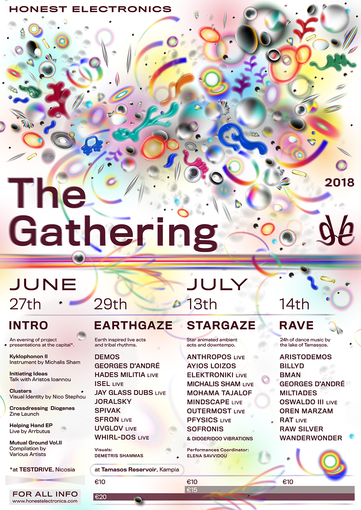
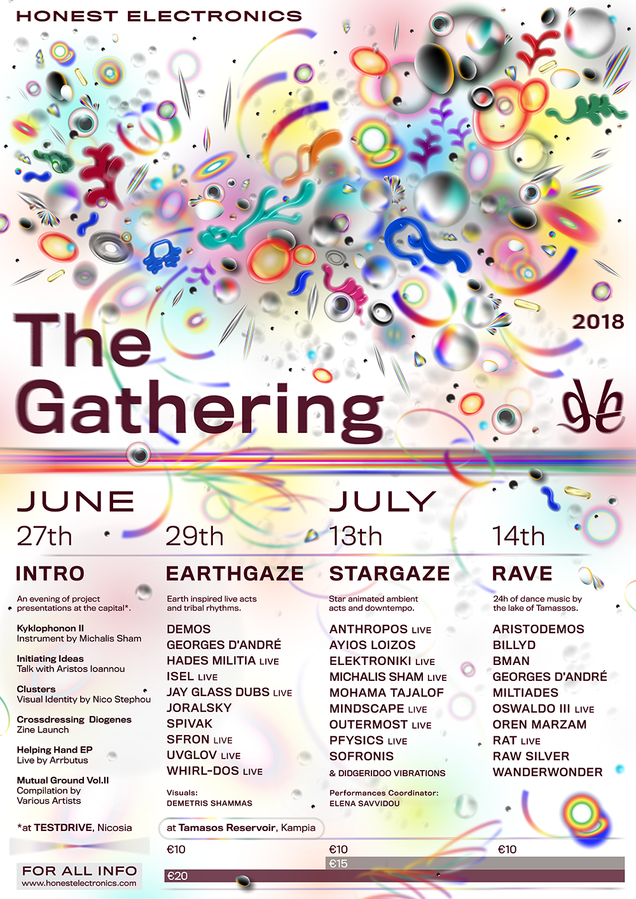
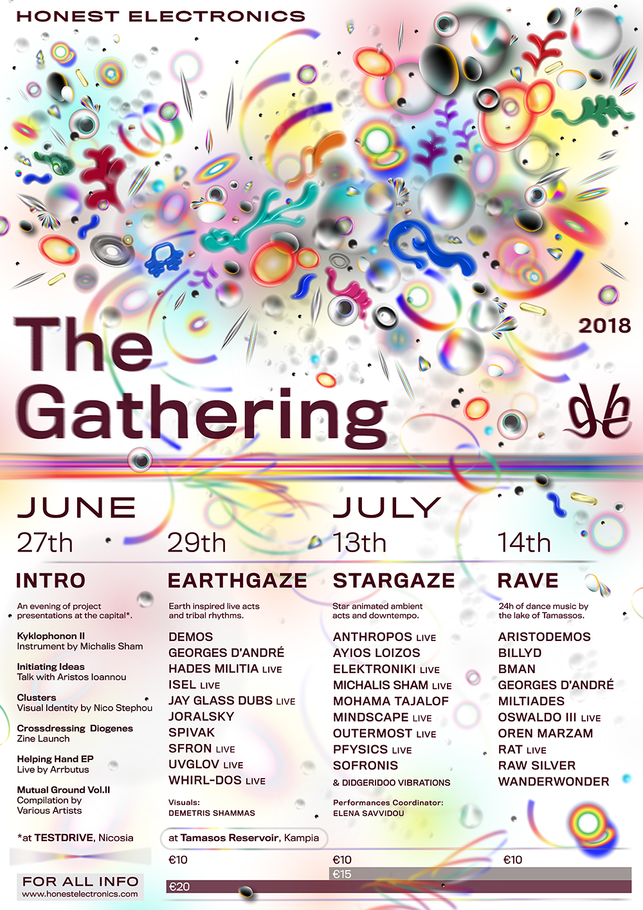
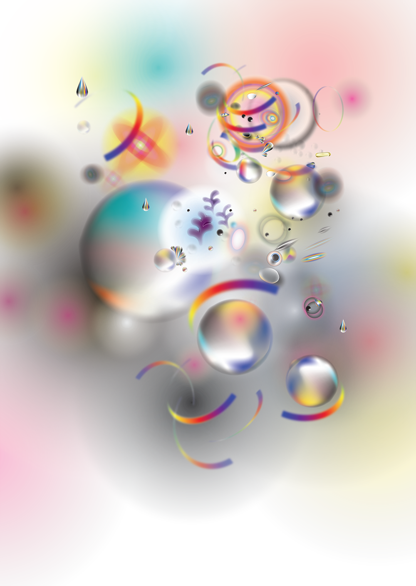
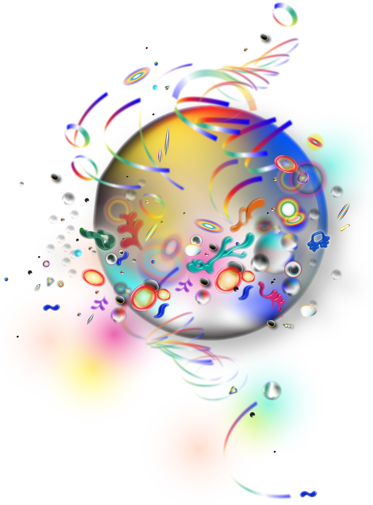

THE GATHERING 2018
The Gathering is a yearly festival organised by Honest Electronics in order to promote local underground talent.
This year we split the festival into 4 events;
EVENTS
Part 1: INTRO
Part 2: EARTHGAZE
Part 3: STARGAZE
Part 4: RAVE
LINE UPS (TBA)
CONTACT
BUY TICKETS

Part 1: INTRO — June 27
AT DRIVEDRIVE (TESTDRIVE), NICOSIA
EVENTS
Part 1: INTRO
Part 2: EARTHGAZE
Part 3: STARGAZE
Part 4: RAVE
LINE UPS (TBA)
CONTACT
BUY TICKETS

Part 1: INTRO — June 27
AT DRIVEDRIVE (TESTDRIVE), NICOSIA
BUY TICKETS
Part 1: INTRO — June 27
AT DRIVEDRIVE (TESTDRIVE), NICOSIA
The introductory event will take place in the center of Nicosia, at the TESTDRIVE at the newly opened art space DRIVEDRIVE. Here we will present a number of projects initiated by Honest Electronics collective.
🔹 Arrbutus plays "Helping Hand" live.
🔹 Michalis Shammas presents "Kyklophonon II" Instument
🔹 "Crossdressing Dioegenes" Zine Launch
🔹 Nico Stephou presents "Clusters" Visual identity
🔹 "Mutual Ground II" will be released, our second music compilation.
🔹 & Aristos Ioannou is hosting the talk "Initiating Ideas"
🔹 The co-founder of DRIVEDRIVE and visual artist Sayia Navva will present her recent musical output which was released on the Honest Electronics label under the Arbutus moniker titled 'Helping Hands' E.P.
🔹Alongside Sayia will be Michalis Shammas, musician and music instrument inventor who will present the 'Kyklophonon II' an instrument engineered and built by himself. Michalis who performs under the name Michalis Sham will give a 30 minute 'demonstration' of the instrument and his upcoming EP.
🔹 'Crossdressing Diogenes', is a zine created to archive and promote the underground electronic music scene of the island. The magazine is an edit of Nick Herzberg's sociology thesis on the Cypriot scene edited by Peter Eramian and designed by Nico Stephou. It has the intention to be 'observational and responsive, not driven by a desire to fit Cyprus and its music scene into a narrative'.
🔹Clusters is the visual identity of the entire ' summer activities' project, created by Nico Stephou, visual artist and co-founder of Honest Electronics. Each artist of the upcoming festival has been associated with an 'artefact' that Nico has designed. The 'clusters' are the visual combination of these 'artefacts' into abstract compositions suggesting the power of a community.
🔹Mutual Ground Vol II is the second music compilation released by the Honest Electronics label. It acts as a preview of the music which will be heard at the events, with (number) performing artists contributing an original composition to the compilation. The compilation will be sold together with last years compilation on a special packaging.
Part 2: EARTHGAZE — June 29
AT TAMASSOS RESERVOIR, KAMPIA
(19:00 - 7:00)
EARTHGAZE is a themed night of listening, downtempo and tribal rhythms. We asked our invited artists to be inspired by what Earth means to them.
For EARTHGAZE we visit for the fist time the magical location of Tamassos Reservoir and we place ourselves outdoors between the eucalyptus trees. In here we launch our GAZE STAGE. This stage is designed for an audiovisual experience by the architect Eleni Diana Elia and the visual artist Demetris Shammas.
🔴 Jay Glass Dubs (LIVE)
🔵 Georges D'André
🔵 Demos
🔵 Hades Militia (LIVE)
🔵 isel (LIVE)
🔵 Joralsky
🔵 spivak
🔵 Hibiscus
🔵 Whirl-DOS (LIVE)
⚫️ UVLGLOV (LIVE)
🔴 International Guest
🔵 Collective
⚫️ Local Guest
FURTHER INFO:
🔹This is a listening and downtempo event.
🔹The event begins at 19:00 and ends at 7:00 in the morning.
🔹There will be a sitting area but it's advised to bring your sitting mat or even your tent.
🔹Their will be projections designed by Demetris Shammas.
🔹Elena Savvidou is in charge for light performances.
🔹There will be summer cocktails served.
Part 3: STARGAZE — July 13
AT TAMASSOS RESERVOIR, KAMPIA
(19:00 - 7:00)
For STARGAZE we visit again magical location of Tamassos Reservoir and we place ourselves outdoors between the eucalyptus trees and the GAZE STAGE. This stage is designed for an audiovisual experience by the architect Eleni Diana Elia and the visual artist Demetris Shammas.
STARGAZE is a themed night of ambient and star animated relaxing music. We asked our invited artists to be inspired by what stars means to them.
🔴 Outermost (LIVE)
🔴 Kris Vango (LIVE)
🔵 anthropos (LIVE)
🔵 elektroniki (LIVE)
🔵 Michalis Sham
🔵 mindscape (LIVE)
🔵 Mohama Tajalof
🔵 Pfysics (LIVE)
⚫️ Ayios Loizos
⚫️ Sofronis
⚫️ Didgeridoo Meditation
🔴 International Guest
🔵 Collective
⚫️ Local Guest
FURTHER INFO:
🔹This is an ambient event.
🔹The event begins at 19:00 and ends at 7:00 in the morning.
🔹There will be a sitting area but it's advised to bring your sitting mat or even your tent.
🔹Their will be projections designed by Demetris Shammas.
🔹Elena Savvidou is in charge for light performances.
🔹There will be summer cocktails served.
Part 4: RAVE — July 14
AT TAMASSOS RESERVOIR, KAMPIA
(22:00 - 22:00)
For RAVE we visit the area next to the lake of Tamassos. Here we will create a stage designed for 24 hours of outdoor rave music. A special team has been assembled to ensure plenty of shade, cooling beverages and comfortable sitting area.
🔴 Oren Marzam
🔴 BMAN
🔴 Miltiades
🔵 Wanderwonder
🔵 RAW SILVER
🔵 Oswaldo III (LIVE)
🔵 RAT (LIVE)
🔵 Georges D'André
🔵 BillyD
🔵 Aristodemos
🔴 International Guest
🔵 Collective
FURTHER INFO:
🔹This is rave event.
🔹The event begins at 22:00 of 14th and ends at 22:00 of the 15th.
🔹There will be shaded dancing floor.
🔹There will be running cold water.
🔹There will be a comfy sitting area.
🔹There will be summer cocktails served.
TICKETS
Part 1 is for FREE
Ticket Prices for events at Kampia;
♦️€10 for 1 event
♦️€15 for 2 events
♦️€20 for 3 events
BUY NOW
CONTACT
infohonestelectronics@gmail.com
PROJECTS
"Mutual Ground II" Compilation
Promo Mixtapes
Clusters "Festivals Identity" — Nico Stephou
 4 EVENTS

Miltiades (GR)
Miltiades is the Greek deep house and techno DJ and producer Miltiadis Merentitis. Based in Athens, his work has appeared on labels such as Nous, Echovolt, Bliq, Freebeat, Appian, Play !t Loud, as well as Hakim Murphy's legendary Chicago label Synapsis.
His productions sit proudly on vinyl releases amongst those of artists such as Jose Rico, Life Recorder, and Leonid; and his work has been remixed by the likes of Afrikan Sciences, Ngly and the aforementioned Hakim Murphy.
His music, like the photographs he likes to take, is foggy, smokey and layered. His sound is deep, soulful and filled with analogue warmth. Discogs

Oren Marzam (IS)
Oren Marzam is an Israeli DJ, with over a decade in the local nightlife scene and a 7 year run as both resident and co-booker of Tel Aviv’s Breakfast Club. Oren has founded various liberal and gay-oriented parties, club nights and events in Tel Aviv’s underground culture, utilizing his skills in graphic design – with work varying from poster art and music releases to promotional branding and online marketing – to form a complete, realized vision. In late 2015 Oren relocated to Berlin and was swiftly embraced by the local scene, playing in renowned parties and clubs like Panorama Bar, Homopatik, Tuntenhaus, Horse Meat Disco and Absolution, as well as UK’s Glastonbury Festival and various clubs and events throughout Europe. Growing up in the Israeli melting pot – and Tel Aviv’s eclectic underground culture in particular – Oren is a fearless explorer eager to embark on new musical journeys on each and every set played. With an abundance of versatile musical inspirations and diverse cultural references, He aspires to weave together different cultures and sound aesthetics, cutting and pasting together Detroit Techno, Chicago House, Ghetto House, Disco, African Beats, Broken Beats, UK Dub, Future Jazz and many more, always evolving and ever-expanding his reach. RA

BMAN (CY/DE)
B-Man is a collector, DJ and promoter based in Berlin, dedicated to exploring and digging deep into the sonic universe for exceptional and timeless music. “B-Man (In Space)” stands for music with energy and spirituality, raising your vibrational frequency to higher consciousness. B-Man’s trademark sound is a result of Berlin's unique edge and energy, and the urge and desire to express creativity and imagination through authenticity and genuity. It can be described as music from a future yet to be, within a deep past that will have been. A forward-thinking nostalgic journey, emphasising the present-not-present narration. A dark yet soulful trip you can either sit back and experience or jump up and dance to. RA

Aristodemos (CY)
Aristodemos is the man behind the countless under the radar gatherings, a vital organ in the local Cypriot scene. He is a collector, an endless source of good vibe dance music and a creator, being founding member of Exotica Music Events, Essoterica and Honest Electronics. Soundcloud

Arrbutus (CY)
Nayia Savva is a visual artist graduated from Camberwell College of Arts in 2015. Alongside some solo exhibitions in 2012 and 2017 she is now running the new artist-led space DriveDrive in Nicosia, Cyprus with Raissa Angeli. Her recent sound project "Arrbutus" has been release on Honest Electronics as her first debut EP called "Helping Hand". Bandcamp

Anthropos (CY)
Antropos is a perpetual journey, a cosmic force, vigorous and fragile, an android in a void. language is universal .repetition is trancendental. Anthropos is the key

Ayios Loizos (CY)
Loizos Olympios is a visual artist living and working in Limassol. His current practice combines photography, cutting as drawing, collage and artists’ publications. His playlists have been published in The Wire magazine’s charts section a couple of times. Additionally he has extensively collaborated with numerous CY based theatre and dance groups (Lia Haraki-Pelma, Rooftop, En Drasei et al) for visual and/or audio enhancements and has co-curated Re-Possessed - Possession in Contemporary Cinema with Dr. Markos Hadjioannou for Cyprus Film Days in 2011. For Sardam Literary Festival 2017 he organised CYence Diction:Textual Explorations in Indigenous Bookart Publications. He has been collecting music since he can remember but is currently focused on field recordings, ritual music, text/sound compositions, and extended vocal techniques. He podcasts irregularly on Mixcloud as AyiosLoizos. Mixcloud

BillyD (CY)
BillyD is a ‘Music Technology Specialist’ gradfuate, based in Cyprus. He is a DJ and a Producer appreciated in the local and international Techno scene. He was the co-founder of the live-streaming channel ‘Weedo_It’ and ‘Honest Electronics’ sub-label ‘Dishonest’. With performances at many clubs and bars in Cyprus and UK, BillyD had established his own identity of music style, going from Deep to Minimal Techno. Bandcamp

Didgeridoo Meditation (CY)
Ayis Livadas is a didgeridoo performer and various indigenous instruments player, focusing on producing sounds for healing and deep meditation. He carries out personal and group Sound Healing Meditations, personal Sound Healing and Vibrational – no touch massage, group meditations, and live performances. On this Live performance he will provide a deep and mystic soundscape and create the space for people to enter and travel through this journey of healing sounds towards the within. The Didgeridoo will be accompanied by singing bowls and other vibrational instruments.

DEMOS (CY)
DEMOS is the alter ego of Aristodemos. DEMOS is the guy who stays home all night digging the internet for unearthed gems, he is the guy who likes to mix all the music genres under the sun in one mix, he is the guy you go and talk music with for hours. Soundcloud

elektroniki (CY)
falling folds feeling frequencies for future falling folds feeling fast presents for ever folding. Soundcloud

Georges D'André (CY)
Georges unparalleled love and passion for dance music and his obsession with collecting have meant that he amassed a large number of records over the last twenty years. After initially playing at home or at private gigs for friends for some time, he started being asked to play in public and in front of increasingly wider audiences. He has been a part of the “Honest Electronics” collective of artists and DJs since the very beginning and has played at both of the first two Gatherings. He also played a memorable “mammoth” set at last year's “Dishonest” event at the river stage. Over the last three years he has played many gigs and festivals all over the island. His regular gigs at Sousami Bar in Limassol, where he was recently asked to be one of the residents, have gained some attention (and notoriety). Whilst many of his favourite records would fall under deep and funky house, he is not constrained within genre boundaries and finds unique ways to mix things up and show his love for funk, disco and techno. He is a founding member of the “Whizzy Wigs” crew with whom he organises gigs with like-minded DJs and artists from around the world. Soundcloud

Hades Militia (CY)
Love is subliminal
Justice is subjective
War is subconscious
Soundcloud

Hibiscus (CY)
I can hear my heart beat
elevating me
above the grounds.
I can hear it,
my h
e
a
r
tb te ta t t
beat
Soundcloud

isel (CY)
Isel is a moniker of Yiannis Eliades. Athough Yiannis’ relationship with music has been ongoing for years, his approach to music as a means of expression has evolved over time and has taken various forms. He currently produces and performs using a blend of analog and digital synthesizers, drum machines and twisted gathered field recordings. His recent musical adventures include composing soundtracks for short films and performing live scores for longer films. Bandcamp

Joralsky (CY)
Over the last couple of years Joralsky has been consistently delivering some memorable hyperlocal sets that take into deep consideration both the dancing community and its surrounding environment, which in turn render “genre” as trivial and antiquated. Hence, the diversity of parties he has cofounded: C’est demon! & Programmed for Love. In response to this year’s Earthgaze theme, he is preparing a sunrise set that reflects on the possibility of different gazes. In his own words: “There are two ways one can gaze on earth’s soil…either directly on the ground or if the soil itself becomes dust in the atmosphere. While the first gaze suggests a contemplative, solitary gaze, the second one requires a group commotion agitating the earth: this one implies dancing. My set will oscillate between these two possible earthgazes.” Soundcloud
Kyklophonon II
by Michalis Sham
"Kyklophonon II" is a unique music instrument, designed and created by the wonderfully talented Michalis Sham. It uses gravity and gears to create its characteristic mesmerising sound. The instrument, as well as the first personal EP of Michalis based on these sounds, will be presented and performed at The Gathering - Part 1: INTRO.

30 ARTISTS

Jay Glass Dubs (GR)
Jay Glass Dubs is an exercise of style focusing on a counter-factual historical approach of dub music, stripped down to its basic drum/bass/vox/effects form.
Dimitris Papadatos (b.1981,USA) is a composer, musician and sound artist based in Athens Greece.
The main concern in his work is an apposition of disparate elements that assume a re-appropriation of historically applied methodologies while questioning forms of empowering them.The biggest body of his work reflects issues as copyright, spirituality and originality, undergoing a constant state of transfiguration of its outsourcing. He has performed in venues and spaces such as Portikus in Frankfurt, Klub Kegelbahn in Lucerne, Departamento in Mexico City, Corsica Studios and Rye Wax in London, Macao in Milan, Haus der Kulturen der Welt in Berlin, Bios in Athens, Soup Kitchen in Manchester, Salon Des Amateurs in Dusseldorf , among others while he has recorded broadcasts for stations such as NTS Radio, Rinse FM, Radar Radio, dublab and Resonance FM.
His music is been featured in various radio shows including BBC Radio 3's Late Junction, NTS Radio,WFMU, Rinse FM & Rinse France, Resonance FM, Independent Music Podcast, Dublab and Tiny Mix Tapes' Tabs Out Podcast to name a few.
Since 2017 he is resident selector for Noods Radio in Bristol, and LYL Radio in Lyon. Official Website

Kris Vango (DE)
Explaining his approach to music as “an emotional purge and an exploration into the realms of the universal soul”, producer/visual artist Kris Vango brings together dark fragmented sounds of the techno underground with an ambient space of hope and utopia. Born and raised in Australia, the roots of Vango’s music echo the countries expansive and dramatic landscapes, mirrored against the dark hedonistic shadow-side of the underground club scene of Berlin, where he has been living for the past 4 years. It is Vango’s belief that our sense of existence is interpreted through systems created by our varying global cultures, religions and stories of the universe, he believes the keys to unlocking our human potential are in the overlapping patterns of ancient theories and systems - and reinterpreting them into our modern intellectual observations of the physical world of science and quantum physics. It is this relationship between the physical and non physical aspects of our conscious life on earth that he finds most interesting. His soundscapes reflect and explore these patterns, symbols and systems through the universal language of emotions; art and frequencies. It is the research of these explorations that are expressed through music, inviting the listener to discover aspects of themselves by using sound and music frequencies to interpret the stories of ancient systems and ideologies. Soundcloud

Outermost (GR)
Outermost is the dystopian and motorised monicker of greek producer and DJ Miltiadis Merentitis. One of the memorable explosions is the release on Echovolt Records “Intruder EP” with the street vocal track featuring Venus Volcanism and his cassette release on Phormix label. Earlier this year he has released an experimental techno joint “Surface EP” on the Athenian Modal Analysis. Discogs

Mohama Tajalof (CY)
“Cypriot DJ from Nicosia. She has shaped and have been shaped by the local Cypriot music scene from 2011 and is formerly known as Mohama Tajalof and SB9; as she likes to take a liberal approach to her material and identity. Also, co-founder of events series “C’est démon!”. Soundcloud

Oswaldo III (CY)
Oswaldo III uses an all hardware setup for his live sets that get further elaborated on the spot, trailblazing through house and techno tropes. It was originally conceived with this Simondon quote in mind, which best capture his relationship to gear: “That said, contemplation is not techno-aesthetics’ primary category. It’s in usage, in action, that it becomes something orgasmic, a tactile means and motor of stimulation. When a nut that is stuck becomes unstuck, one experiences a motoric pleasure, a certain instrumentalized joy, a communication–mediated by the tool–with the thing on which the tool is working. […] It’s a type of intuition that’s perceptive-motoric and sensorial. The body of the operator gives and receives. Even a machine like the lathe or the milling machine produces this particular sensation. There exists an entire sensorial array of tools of all kinds.” Soundcloud
RAT (CY)
Hailing from the island of Cyprus in the Mediterranean Sea, Andreas’ love for music and sound was expressed at a young age. He picked up the guitar and started numerous bands, growing strong as a performer in the local scene. Experimenting with guitar pedals and sound is what pushed him into pursuing a degree in Sound Engineering (BSc Hons). Being constantly exposed to synthesis, digital manipulation and psychoacoustics, pushed Andreas into exploring his identity as Rat and electronic music production. He found himself sonically in London during his post-graduate degree (MA) in Audio Production in 2012. Since then Rat has been constantly releasing music on various local and international labels with undertones of dub, techno and garage. Rat’s productions have a distinct complexity in both sound design and synthesis; a skill developed through his studies and professional work as a sound designer, as well as poly-rhythmic and convoluted rhythmic patterns; an influence and homage to his progressive rock roots. As Rat never picked up DJing, he decided to putt his technical know-how to good use, and started playing live sets using a variety of analogue synthesizers, his guitar and Ableton Live as a sequencer and workstation. His live sets are an emotional rollercoaster spanning from deep sentiment all the way to floor stomping rhythms. Album

RAW SILVER (CY)
RAW SIVER is Nico’s Stephou music alias, heis a self-taught producer and DJ since 2008. He has accomplished releases on various compilations of labels like Low Income $quad (Croatia), Memory No.36 Records (U.S.A.), SEAGRAVE (U.K.) and an album release on Speaker Footage (Denmark). Recently he has release his first solo EP on Honest Electronics and had his first solo exhibition/performance at Thkio Ppalies Artists-Led Space in Cyprus. He is one of the three core member as well as the Art Director of Honest Electronics (CY), XORKO (2011-2013 CY) and MJMJ Records (U.S.A.) Soundcloud

Sofronis (CY)
Sofronis loves to combine tunes from dissimilar genres. At “The Gathering”, under the stars, he will present his own interpretation of what he believes the notion ambient music is. Soundcloud

spivak (CY)
spivak used to make music on the piano. Now she makes music on the computer. Soundcloud

Pfysics (CY)
"Pfysics" is duo Panayotis and Kalaqs. Their interest in transfusing guitars with electronics led them to explore a common sound which often veers into the vastness of empty spaces between silence and light, a dichotomy of non opposables. Kalaqs was born in Limassol. He got involved in music and visual arts from a young age and in 2015 he graduated from the Athens School of Fine Arts. He has been experimenting with guitars and pedals since his teens and often found himself in bands, collaborations and solo performances.
Panayotis is an audiovisual anti-auteur. His debut album 'Hawaiiprus' is a socio-psychological study of the place he lives (Cyprus) in the quise of a novel where the protagonist is a mysterious island.
He performs using a selection of electronic modular sythesizers, drum machines and haptic instruments, guitars, drums and microphones which metamorphose constantly as his sets are often based on autoschediasm. Soundcloud

Michalis Sham (CY)
Born in Nicosia 1988, Michalis is a multi-disciplinary engineer, inventor, designer and musician. His sound performance is built around devices of his own making, whether it be the peculiar Kyklophonon, his home-made midi controllers, or his collection of custom sequence-producing digital algorithms. Characterized by a deep layering of polyrhythmic patterns, his sound always carries a feeling of drone ambience, creating rich hypnotizing soundscapes that stretch up to half-an-hour long tracks, yearning for a balance between mathematical complexity and chaotic bliss. Soundcloud

mindscape (CY)
“a sophisticated listener, a potential lover” Soundcloud

UVGLOV (CY)
UVGLOV is an audio-visual alias of Anastasia Dolitsay, (who just recently turned 19). Anastasia was born in Moscow and spent most of her childhood visiting Cyprus. Now for the past 4 years she is based in Paphos, where she spends her free time exploring through sound the emotional challenges of having two homes and identifying with different cultures. Her mysterious melodies, often accompanied by melancholic vocals and audio recordings of the Cypriot flora and fauna, encapsulate these aspects of her personality. Soundcloud

Whirl-Dos (CY)
Whirl-Dos is an electronic music producer based in Paphos, Cyprus. His work combine subliminal atmospherial soundscape and amphibian rhythmic adventures.Soundcloud

Wonderwander (CY)
Wandeerwonder’s love for spreading music has been evident for decades. By diving into the dub feeling and selecting from various styles (techno,disco,house,reggae,psy...) she is aiming to surf on the vibes of mystery. Soundcloud